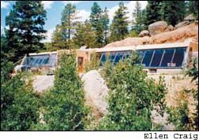
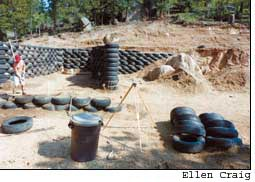
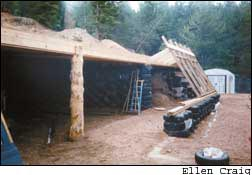
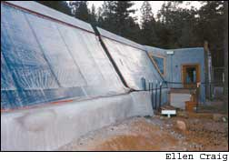
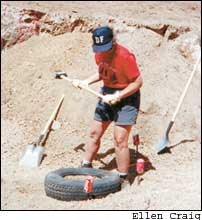
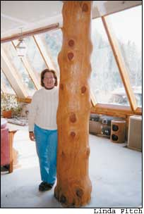

I have always thought of myself as a fairly conventional, average sort of person, but I have to admit that my home, located near Breckenridge, Colo., is not at all average. About 10 years ago, I decided to move from my three-acre property to a larger, more remote piece of land. I was searching for ideas about energy-efficient, environmentally friendly houses when I stumbled on an article about Earthships.
An Earthship is a type of rammed-earth house, sort of a modern version of a Native American pueblo dwelling. It’s a trademarked name and design, conceived by Michael Reynolds of Earthship Biotecture, a company based in Taos, N.M.
The walls of this eco-friendly house are made of discarded tires, which are tightly packed with dirt using a sledgehammer, and then stacked like giant bricks. Mud is packed into the scalloped spaces between the tires and then usually finished with adobe, plaster or stucco.
Earthships are passive solar homes, which makes them extremely energy efficient. They are built with south-facing walls made almost entirely of glass - many people incorporate a greenhouse into this part of the house. During the winter, the sun is at a low angle in the sky, and sunlight streams in through the windows to heat the house’s heavy walls, which act as thermal mass. When the room temperature drops below that of the walls, they slowly emit heat to warm the house. With windows and operable skylights for ventilation during the summer months, the building maintains a relatively stable temperature year-round. Many Earthship owners use woodstoves for backup heat, but otherwise, their houses are heated entirely by the sun.
I was so intrigued by what I read that I journeyed to Taos for a two-day seminar. There I got to see a completed Earthship, and I thought that its wonderful greenhouse and exotic plants gave a warm, comfortable feeling to the house. I quickly decided that I could - and should - build this type of home.
I purchased 35 acres in the mountains, selecting the site for its southern exposure, remoteness, spectacular view and large, interesting-looking boulders. Several of those factors ultimately made construction more difficult than I had planned, particularly the steep slope of the site! I purchased Earthship plans and put my existing house on the market. To my surprise, and somewhat to my dismay, it sold in three days, and I had six weeks to move. I quickly made plans to erect a fence for my dogs on the new property, and a friend was generous enough to lend me a pop-up camper, but life was still a bit rugged. I had no electricity and hauled all my water by hand
Most of the heavy work on the house was completed within the next 16 months. Fortunately, I was able to take advantage of the warm summer weather for construction because that’s when I had time off from my job teaching high school physics, math and electronics.
I worked on the house every step of the way, but decided early on to hire out some of the work to professionals, including excavating the site, building the roof and applying the exterior stucco. I also hired a crew of former students to help build the tire walls. I’ve done as much of the rest of the work as possible, including building the house’s interior walls, and designing and installing the electrical system.
That first summer, I supervised the work as the site was leveled, and then the students and I began building the walls. Tire walls are best built by putting the larger tires at the bottom and decreasing the tire size as the walls get taller. I spent several days at the dump with a rented truck picking through heaps of wet, dirty and heavy tires, looking for the correct sizes.
The next step was to fill them with dirt: It took a crew of five about eight weeks to pack and level the tires for the first 1,100 square feet of the dwelling. I purchased a construction-grade transit to accurately measure the angles of the walls, and as a result, the completed walls vary no more than a quarter inch over a 100-foot span. The carpenters who built my roof were impressed. According to them, “stick frame” walls built by professionals are frequently much less flat.
With the roof completed, the garage doors in place and a temporary door on the side where there would eventually be more house, I moved inside. For the next 10 months, I lived without running water or electricity. The “kitchen” was a piece of plywood on two sawhorses with a 2-gallon water dispenser at one end and a two-burner Coleman stove at the other. I loved the dirt floor (no cleaning!) and the portable toilet (someone from the construction crew cleaned it and brought toilet paper)
The house is now 3,000 square feet, including a 720-square-foot garage. The rooms are huge: A living room, dining room and kitchen are combined as one large room; the other rooms include a bedroom, bathroom, control room (with batteries, water storage, etc.) and utility room. The house was designed so that it could easily be modified to include two more bedrooms and a bathroom
During the excavation of the site, we came upon some large boulders that weren’t going anywhere without heavy explosives. Fortunately, they were along the north side of the house where they could separate the kitchen and the living room. I opted to leave them, doing away with the wall that had been planned there, and instead installed a post and beam for structural support. Now, I’m quite glad we left the boulders intact. Everyone who visits admires them, and my cat loves them, too!
About a year and a half into the project, I finished the bathroom: a lovely free-form, curved wall built out of concrete and aluminum cans, in standard Earthship fashion. The shower and floor were tiled, the toilet and sink installed, so - at last - I had indoor plumbing. My first indoor shower was quite different from the outdoor showers I had been taking. There was no more view of the mountains, but it was breeze-free, with unlimited hot water, thanks to my on-demand water heater: a wonderful energy-efficient appliance that I would recommend to anyone
The electrical system was my next major project. I had always wanted solar electricity, and I planned to hook up to the rural electric company as a backup. But because I had chosen such a remote location, it was cheaper to go completely off the grid than to bring in power lines.
I designed my own solar setup using ideas in the Solar Living Sourcebook I ordered from Real Goods and some help from its support staff. The water-pumping system is composed of two panels connected to a direct-current (DC) pump with no batteries, which means the pump only works in sunny weather. To compensate, I installed a 600-gallon cistern to store water. When the water level starts to get low, a float switch automatically activates the well pump
The electrical system consists of a dozen 75-watt solar panels, a Trace inverter, an Ananda APT Powercenter to monitor everything and 20 golf cart batteries. I followed the simple directions supplied by Real Goods and installed everything myself. I also bought a very efficient SunFrost refrigerator and a small freezer. All this cost less than having the power company run lines to my house. Since then, my solar system has operated for eight years at no additional cost. I think it was quite a deal.
With the solar power supply in place, it was time to wire the house for electricity. I bought a book called Wiring Simplified by H.P. Richter, drew my own plans and started stringing wire. Much to my delight, I passed both the electrical rough-in inspection and the final inspection on the first try. Not long after that, I got a certificate of occupancy and breathed a sigh of relief, knowing I had cleared the last legal hurdle.
Because I built predominately out of pocket, I am still finishing work on the interior of the house. My kitchen is still unpainted, but it’s now completely functional, with a wonderful 1947 Wedgewood stove that I had retrofitted to burn on propane. I discovered that nearly all new gas stoves operate with electronic ignition, which would have drawn too much power from the batteries of my solar system.
My first real test of off-the-grid living came shortly after getting my certificate of occupancy when a fall snowstorm turned into a multiday blizzard. I called my mother who lived about 25 miles away and learned she was wrapped up in blankets sitting in the dark. Apparently, I had been blissfully ignorant that power was off to the whole county. I fetched Mom, and we weathered the blizzard at my house, toasty warm and with plenty of hot food, thanks to my glorious Wedgewood stove.
I am thrilled with how well the house turned out. Of course, if I were going to do it again, there are some things I would change. I would spend a year researching Earthship design and construction techniques before I decided on final plans. I would make ease of construction a major criterion in my choice of a building site. I also would pay for a professionally engineered and installed water drainage system; the simple drain I installed turned into a flooding nightmare that was only resolved after additional trenching and blasting to the tune of about $10,000. Most importantly, I would purchase an inexpensive trailer and connect it to electrical and water systems before moving onto the property so that I could live more comfortably while building. Never again do I plan to spend a winter camping above 9,000 feet!
Through this process, I’ve learned so many things I never knew about: strength and slump of concrete, tire sizes and carpentry terminology. I’m so proud of building this house that it’s sometimes hard not to make faces when people tell me “we built our house,” when what they really mean is they approved the plans and paid for all the labor. But I’m also encouraged to see how few resources it really takes to build and maintain a home with a very comfortable style of living. I love living off the grid, and I hope more people will have a chance to experience this kind of independence.
|
 ELLEN CRAIG Ellen's Earthship. |
 ELLEN CRAIG The walls of the house begin to take shape. The long south-facing wall of windows is one of the most recognizable features of an Earthship. |
 ELLEN CRAIG Ellen Craig packs tires with dirt to create ?bricks? that will form her house?s walls. |
|
 ELLEN CRAIG Ellen Craig shows off an unusual feature of her home, the boulders that divide her living area into two room s |
 ELLEN CRAIG |
 ELLEN CRAIG |